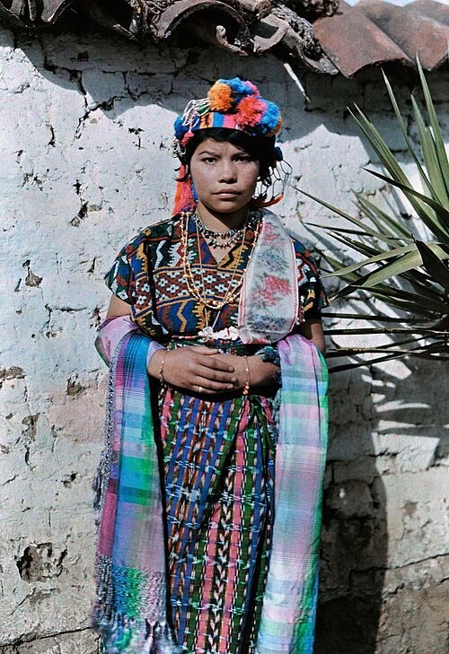
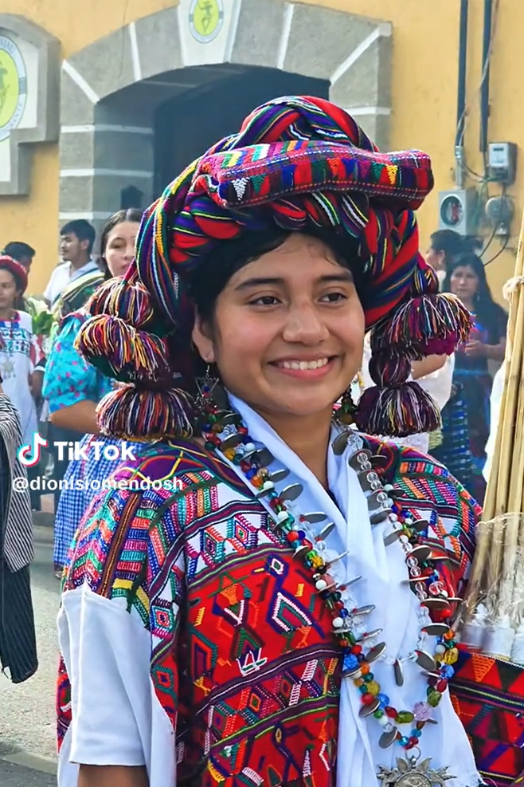

Maya

The Maya peoples are the largest Indigenous population in Guatemala. Their ancestors built one of the most advanced civilizations in the ancient Americas, known for achievements in architecture, astronomy, mathematics, and writing.
Today Maya communities are found throughout the Guatemalan highlands and rural regions.

Many traditions continue to play an important role in daily life, including local markets, agricultural practices, and traditional weaving. Colorful textiles often represent community identity and are an important expression of Maya culture.
Despite centuries of social and political change, many Maya communities continue to preserve their languages and cultural traditions.

Garifuna
From the Caribbean islands to the shores of Guatemala, the Garífuna carry a culture born from African, Indigenous, and European roots. Feel the rhythm of their drums and discover a community like no other.

Xinca
One of Guatemala's most ancient and least known peoples, the Xinca have called the southeastern highlands home for centuries. Learn about their unique language, their fight for recognition, and their journey to preserve what remains.

About
Behind every website is a story. Learn about the person who created this project, the inspiration behind it, and the sources that brought these cultural stories to life.

Ladinos
Born from the meeting of two worlds, the Ladino identity shaped modern Guatemala, its cities, politics, and culture. Discover the community at the center of the nation's history.